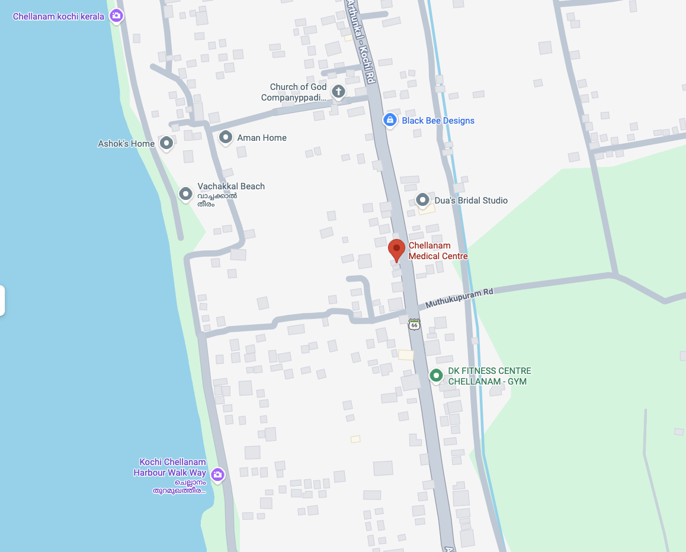

OP Consultation
General medicine care for fever, infections, pain, stomach complaints, breathing concerns, and routine family health visits.
Family owned. Family run. Rooted in South Chellanam.
A community medical clinic serving Chellanam residents with OP care, day care inpatient observation, an in-clinic pharmacy, procedure room support, and the warm, steady care of Chellanam's own Dr. Subin George.
നമ്മുടെ ചെല്ലാനം, നമ്മുടെ ആരോഗ്യം
Chellanam lives between the Arabian Sea and the backwaters, shaped by work, weather, faith, family, and resilience. CMC is designed for that rhythm: nearby medical help for children, elders, fishing families, workers, and households who need care without leaving their village behind.
The promise is simple: practical medicine, kind listening, sensible follow-up, and clear guidance on when a patient should be treated locally and when they should be moved to a higher centre.
What CMC Offers
The new CMC experience brings together consultation, observation, medicine access, and procedure support so common health needs can be handled with continuity.
General medicine care for fever, infections, pain, stomach complaints, breathing concerns, and routine family health visits.
Short-stay observation and doctor-advised day care support for patients who need monitoring without full hospital admission.
On-site pharmacy access for prescribed medicines, refills, basic counselling, and continuity after consultation.
Minor procedures, wound dressing, injections, nebulisation, vitals, and clinic-based support in a calm setting.
Ongoing checks, medication review, lifestyle guidance, and follow-up planning for common chronic conditions.
Affordable care for children, adults, and elders, with family context carried from visit to visit.
Gentle support for ageing, chronic illness, symptom comfort, medication routines, and family guidance.
At-request home visits for patients who cannot easily travel, subject to doctor availability and clinical suitability.
Chellanam's Own Doctor
"A family clinic works best when people feel known, heard, and guided clearly. CMC exists for that kind of care."
Led by Dr. Subin George, CMC keeps the feeling of a family-run clinic while expanding its medical capability for the community: OP consultation, day care observation, pharmacy support, and a procedure room that helps patients get timely care close to home.
Speak with the clinicHow Care Flows
Share the concern, current medicines, and any reports. The clinic team helps route the visit.
Vitals, clinical review, prescription, procedure support, or observation are planned as needed.
Care continues through the pharmacy, day care support, repeat checks, and clear follow-up advice.
Inside CMC
For urgent chest pain, stroke symptoms, severe breathlessness, major injury, or any life-threatening emergency, call local emergency services or go to the nearest emergency hospital immediately.

Open Google Maps South Chellanam, KochiVisit Chellanam Medical Centre
Near New Harbour Road, Theatre Bus Stop, South Chellanam, Ernakulam, Kerala 682008
Daily service. Please confirm current consultation and day care timing by phone before travelling.